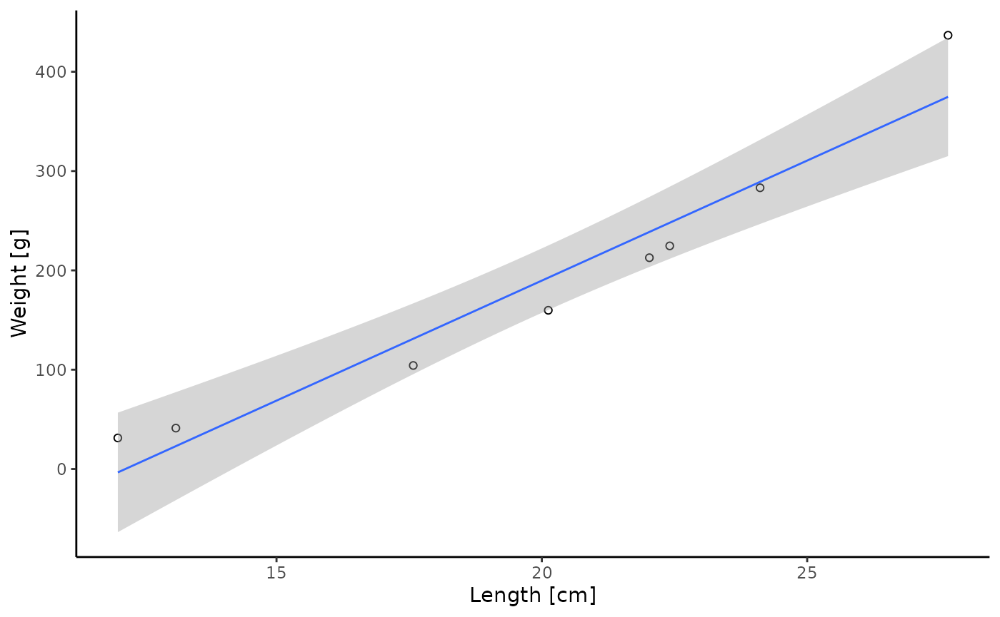
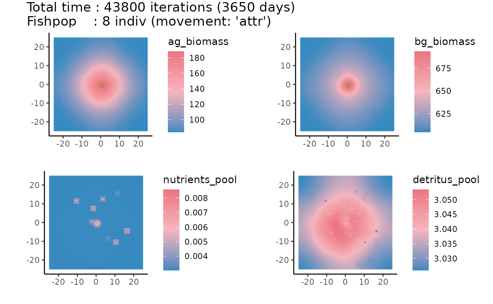

Please see vignette("general-background") for a general model description of arrR. To get a BibTex entry, please use citation("arrR") or see vignette("publication-record").
How to use arrR
You can always use ? in front of a function to see the help page. For many functions, there are additionally arguments which you can specify, which are not necessarily explained here.
1. Import and change starting values and parameters
After you installed and loaded the package, you can access default/exemplary starting values and parameters of the model. Since both objects are just named lists, you can easily change certain parameters. If you pass the objects to check_parameters(), the function will check if all required values are available and return warnings if not.
Of course, you can also load your own data as a list containing starting values and parameters. The read_parameters() function can help with this. You can also create the starting values and parameter lists completely from scratch as long as they are two named lists containing all required values.
Please see vignette("starting-values-parameters") for more information about all parameters.
# get starting values
starting_values <- arrR::default_starting
# get parameters
parameters <- arrR::default_parameters
# change some starting values and parameters
starting_values$pop_n <- 8
parameters$pop_reserves_max <- 0.1
parameters$seagrass_thres <- -1/4
# check if all parameters are present and meaningful
check_parameters(starting_values = starting_values, parameters = parameters)
#> > ...Checking starting values...
#> > ...Checking parameter values...
#> > ...Checking if starting values are within parameter boundaries...
#> > All checking done!2. Setup seafloor and fish population
Next, you need to setup the seafloor and the fish population. If you want to add artificial reefs (ARs), simply provide a matrix with x- and y-coordinates of all reef cells. The center cell always has the coordinate x,y(0,0). Additionally, when setting up the seafloor, you need to specify the dimensions in x- and y-directions and the grain of one cell.
The function get_req_nutrients allows to calculate the nutrients and detritus amount to keep the whole ecosystem theoretical stable (excluding fish detritus consumption and nutrient excretion). The values can be used to set up the simulation environment.
# create 5 reef cells in center of seafloor
reef_matrix <- matrix(data = c(-1, 0, 0, 1, 1, 0, 0, -1, 0, 0),
ncol = 2, byrow = TRUE)
# get stable nutrient/detritus values
stable_values <- get_req_nutrients(bg_biomass = starting_values$bg_biomass,
ag_biomass = starting_values$ag_biomass,
parameters = parameters)
starting_values$nutrients_pool <- stable_values$nutrients_pool
starting_values$detritus_pool <- stable_values$detritus_pool
# create seafloor
input_seafloor <- setup_seafloor(dimensions = c(50, 50), grain = 1,
reef = reef_matrix, starting_values = starting_values)
#> > ...Creating seafloor with 50 rows x 50 cols...
#> > ...Creating 5 artifical reef cell(s)...
# create fishpop
input_fishpop <- setup_fishpop(seafloor = input_seafloor,
starting_values = starting_values,
parameters = parameters)
#> > ...Creating 8 individuals within -25 25 -25 25 (xmin, xmax, ymin, max)...3. Run the model
The run_simulation() function is the core function of the package that starts a simulation run. You only need to provide the previously created seafloor and fish population as well as the parameters. Additionally, you need to specify the total run time of the simulation (in # of iterations called i here).
Further, you can specify how often all seagrass related processes should be simulated, e.g. only once a day using seagrass_each.
Last, because the produced output can be quite large, you can save only every j iterations, specified by save_each. The model will still simulate all processes each iteration, however, only safe and return the specified iterations to reduce the required memory.
One of the most important function arguments of run_simulation() is the movement argument, which specifies how individuals move across the simulation environment. For more information, please see vignette("movement-behaviors").
# one iterations equals 120 minutes
min_per_i <- 120
# run the model for ten years
years <- 10
max_i <- (60 * 24 * 365 * years) / min_per_i
# run seagrass once each day
days <- 1
seagrass_each <- (24 / (min_per_i / 60)) * days
# save results only every 365 days
days <- 365
save_each <- (24 / (min_per_i / 60)) * days
result <- run_simulation(seafloor = input_seafloor, fishpop = input_fishpop,
parameters = parameters, movement = "attr",
max_i = max_i, min_per_i = min_per_i,
seagrass_each = seagrass_each, save_each = save_each)
#> > ...Starting at <2022-05-16 13:15:55>...
#>
#> > Seafloor with 50 rows x 50 cols; 5 reef cell(s).
#> > Population with 8 individuals [movement: 'attr'].
#> > Simulating 43800 iterations (3650 days) [Burn-in: 0 iter.].
#> > Saving each 4380 iterations (365 days).
#> > One iteration equals 120 minutes.
#> > Storing results in RAM.
#>
#> > ...Saving results...
#>
#> > ...All done at <2022-05-16 13:16:17>...4. Look at model results
You can get a first glance and the results simply printing the model output. This gives you some summary statistics at the last iteration of the model.
# print model results
result
#> Total time : 0-43800 iterations (3650 days) [Burn-in: 0 iter.]
#> Saved each : 4380 iterations (365 days)
#> Seafloor : 50 rows x 50 cols; 5 reef cell(s)
#> Fishpop : 8 indiv (movement: 'attr')
#>
#> Seafloor : (ag_biomass, bg_biomass, nutrients_pool, detritus_pool)
#> Minimum : 85.841, 604.885, 0.003, 3.007
#> Mean : 104.502, 615.831, 0.003, 3.031
#> Maximum : 187.204, 685.661, 0.011, 3.034
#>
#> Fishpop : (length, weight, died_consumption, died_background)
#> Minimum : 15.887, 75.728, 0, 1
#> Mean : 22.322, 274.074, 0, 1
#> Maximum : 33.141, 773.853, 0, 1The returning object mdl_rn object is simply a list “under the hood”, so analyzing the results yourself should be pretty straightforward. Simply access the data you need.
# show all elements of result list
names(result)
#> [1] "seafloor" "fishpop" "nutrients_input" "movement"
#> [5] "parameters" "starting_values" "dimensions" "extent"
#> [9] "grain" "max_i" "min_per_i" "burn_in"
#> [13] "seagrass_each" "save_each"
# show e.g. result for fish population
head(result$fishpop)
#> id age x y heading length weight activity
#> 1 1 0 22.382527 4.691539 269.57951 9.618549 15.5022504 0
#> 2 2 0 17.895587 -13.612518 205.28748 5.306192 2.3649631 0
#> 3 3 0 -11.257563 4.741712 41.27727 10.558687 20.8169153 0
#> 4 4 0 3.768525 19.901102 164.97260 5.733715 3.0213555 0
#> 5 5 0 -9.663892 20.236255 283.13868 18.810242 129.1653515 0
#> 6 6 0 24.228178 23.617821 182.74492 3.592324 0.6891714 0
#> respiration reserves reserves_max behavior consumption excretion
#> 1 0 0.023404162 0.046491249 3 0 0
#> 2 0 0.006480534 0.007092524 3 0 0
#> 3 0 0.031544055 0.062429929 3 0 0
#> 4 0 0.005619348 0.009061045 3 0 0
#> 5 0 0.364693516 0.387366889 3 0 0
#> 6 0 0.001675654 0.002066825 3 0 0
#> died_consumption died_background timestep burn_in
#> 1 0 0 0 yes
#> 2 0 0 0 yes
#> 3 0 0 0 yes
#> 4 0 0 0 yes
#> 5 0 0 0 yes
#> 6 0 0 0 yes
# get results of fish population of the final timestep and plot weight ~ length
(final_fishpop <- dplyr::filter(result$fishpop, timestep == max(timestep)) %>%
ggplot2::ggplot(ggplot2::aes(x = length, y = weight)) +
ggplot2::geom_point(shape = 1) +
ggplot2::geom_smooth(method = "lm", formula = "y ~ x", size = 0.5) +
ggplot2::labs(x = "Length [cm]", y = "Weight [g]") +
ggplot2::theme_classic())
Lastly, you can plot the results. Make sure to also check out the summarize argument of the plot function.
# plot map of seafloor
plot(result, what = "seafloor")
5. Various
arrR comes with many helper functions, such as get_density(), get_limits(), filter_mdlrn() or summarize_mdlrn(). Make sure to check out the Index for an overview.